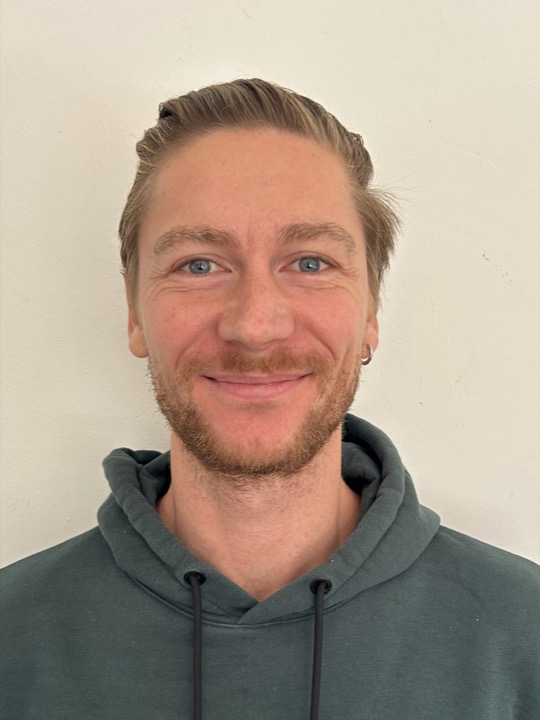

Ein AI Operating System für Ihr Maklerbüro
Ein KI-Assistent, der auf Ihrem Rechner läuft, Ihre Mails, Termine und Dateien kennt und Ihnen die Verwaltung abnimmt, die Ihnen die Zeit beim Kunden nimmt.
- Läuft auf Ihrem eigenen Rechner. Kundendaten verlassen Ihr Büro nicht.
- Für Maklerbüros mit einem bis zehn Mitarbeitern.
- Eingerichtet an einem Tag bei Ihnen, danach drei Monate begleitet.

01Kennen Sie das?
Mit jedem Vertrag wächst die Verwaltung, und die Zeit dafür fehlt beim Kunden.
Die Courtageabrechnungen kommen von jedem Versicherer anders. Der Abgleich mit dem Bestand kostet jeden Monat einen Abend.
Vor jedem Kundentermin suche ich erst Verträge, Mails und Notizen zusammen, bevor ich überhaupt anfangen kann.
Anträge beim Versicherer, Schadenmeldungen, Rückfragen: Was wo hängt, weiß ich nur, wenn ich nachschaue.
Sie wissen, dass KI Ihnen davon etwas abnehmen könnte. Sie wissen nur nicht, welche Arbeit, und wem Sie dabei Ihre Kundendaten anvertrauen dürfen. Beide Fragen beantworte ich an einem Tag bei Ihnen.
02Was der Assistent macht
Was Sie schon haben, bleibt. Maklerverwaltungsprogramm, Vergleichsrechner, Buchhaltung, Mailprogramm und Kalender werden angebunden, nicht ersetzt. Ihr Verwaltungsprogramm bleibt das System, in dem die Wahrheit steht; der Assistent arbeitet daneben und zu. Nichts davon läuft über eine fremde Plattform.
Nach 90 Tagen laufen drei Abläufe von allein, und Sie haben einen Plan für die nächsten drei, die Sie auch ohne mich umsetzen können.
03Drei Stufen für Ihre Daten
Am ersten Tag ordnen wir Ihre Abläufe in drei Stufen ein. Die Einstufung bekommen Sie schriftlich, und sie wächst mit jedem neuen Ablauf mit.
Abläufe ohne Daten Dritter, zum Beispiel Ihre eigene Ablage, Termine, Vorlagen.
Abläufe, die mit Platzhaltern statt Namen laufen, zum Beispiel ein Anschreiben, in das Sie den Namen selbst einsetzen.
Abläufe mit Kundendaten, besonders Gesundheits- und Finanzangaben aus Anträgen. Die haben in einem KI-Dienst nichts verloren.
04So läuft es ab
- Gespräch
Sie erzählen mir Ihre Woche, ich höre zu. Kein Vertriebsgespräch. Innerhalb von 48 Stunden sage ich Ihnen, ob sich ein Tag bei Ihnen lohnt, und wenn nicht, sage ich auch das.
- Ein Tag bei Ihnen
Ich sitze daneben, Sie tippen. Am Abend läuft das System, und die Einstufung Ihrer Abläufe liegt schriftlich auf dem Tisch.
- Begleitung
Zwei feste Termine (Tag 7 und Tag 14), Rückfragen per Mail, ein neuer Ablauf pro Monat aus Ihrer grünen Fläche. Am Ende ein schriftlicher Plan: Ist-Aufnahme, Werkzeuge, Reihenfolge, Kostenrahmen für alles, was danach kommt.
05Preise
Fester Preis, klarer Umfang.
Startpaket, 90 Tage
Tag bei Ihnen plus drei Monate Begleitung
Tag bei Ihnen, einzeln
mit Einstufung und schriftlichem Plan
Begleitung, je weiterer Monat
nach den 90 Tagen, monatlich kündbar
Zuzüglich 19 % Umsatzsteuer. Der Tag wird bei Buchung bezahlt, die Begleitung monatlich im Voraus. Den ersten drei Kunden erlasse ich 300 € und bitte im Gegenzug darum, ihren Fall anonymisiert als Beispiel zeigen zu dürfen.
Was Sie mitbringen: einen Tag, an dem Sie selbst am Rechner sitzen, und ein Claude-Abo auf Ihren Namen (20 bis 100 € im Monat). Ihr Mailprogramm und Ihr Kalender bleiben; was angebunden wird, klären wir im Gespräch.
06Wer dahinter steht
Philipp Konrad, Wirtschaftsinformatiker. Drei Jahre Büroleitung, Finanzen und Controlling in einem Kölner Medizintechnik-Mittelständler, seit 2023 Geschäftsführer einer Familienholding. Ich arbeite selbst so: Ein System dieser Art führt bei mir eine Vermietung, einen kleinen Verlag und die Holding, und ich richte es für Büros ein, die ihre Zeit lieber in Kunden stecken als in Verwaltung.
07Nächster Schritt
Schreiben Sie mir zwei Zeilen zu Ihrer Woche, oder rufen Sie an.
Philipp Konrad · philipp.konrad@gmail.com · 0163 1501178 · ai-office-consulting.de